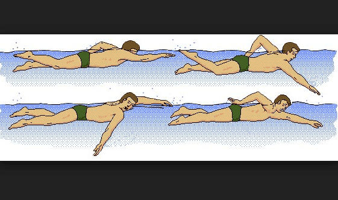

Renang adalah gerakan berpindah tempat secara teratur di air dengan cepat menggunakan tangan dan kaki. Gaya renang yang diperlombakan adalah gaya bebas, gaya kupu-kupu, gaya punggung, dan gaya dada.
Gaya bebas adalah gaya renang tercepat, biasanya digunakan untuk lomba jarak jauh maupun pendek.
Gaya kupu-kupu memerlukan tenaga besar dengan gerakan tangan serentak dan kaki lumba-lumba.

Gaya punggung dilakukan dengan posisi tubuh telentang dan tangan bergantian mengayuh.

Gaya dada sering disebut gaya katak, karena gerakannya mirip katak berenang di air.

Bersama-sama dengan loncat indah, renang indah, renang perairan terbuka, dan polo air, peraturan perlombaan berenang ditetapkan oleh badan dunia bernama Federasi Renang Internasional (FINA).
Di Indonesia, induk organisasi cabang olahraga renang adalah Persatuan Renang Seluruh Indonesia (PRSI).